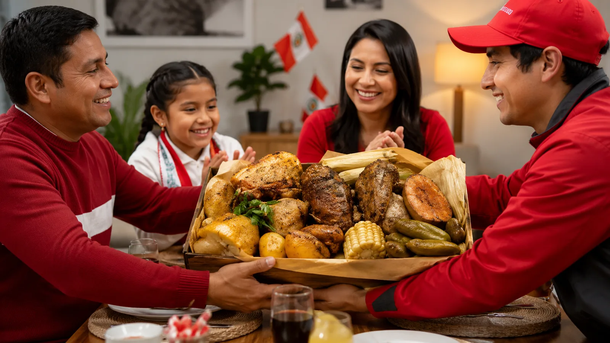
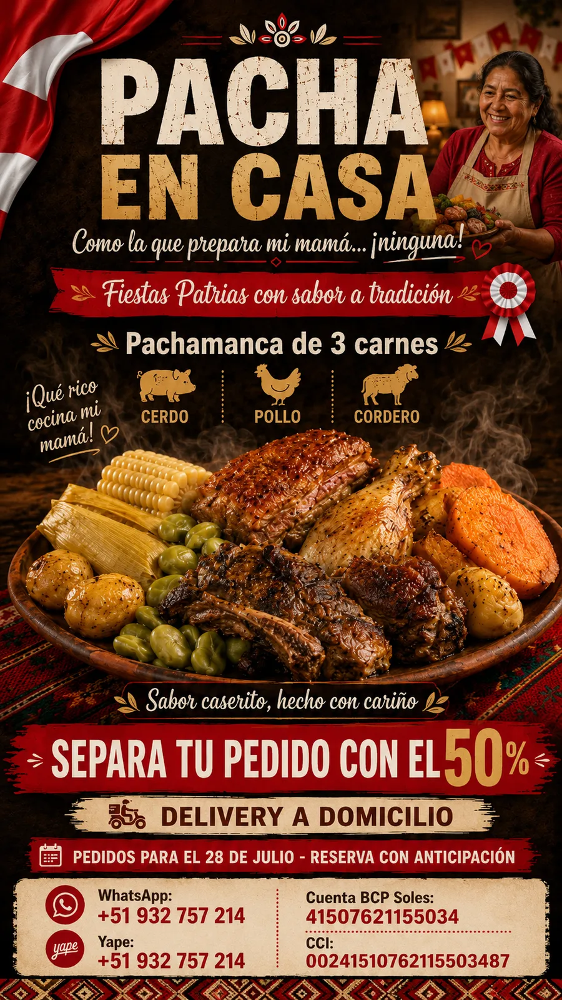

Cerdo jugoso
Corte seleccionado, macerado lentamente con hierbas aromáticas para lograr una carne tierna y sabrosa.
🇵🇪 Fiestas Patrias · 28 de julio de 2026
Sabe a familia. Sabe a fiesta. Sabe a mamá.
Este 28 no busques mesa. Te llevamos una abundante pachamanca de tres carnes, calentita y lista para compartir.
Una celebración sin colas
Carne bien macerada, productos seleccionados y ese sabor caserito que reúne a toda la familia.
Elige tu presentación
Delivery incluido dentro de las zonas urbanas seleccionadas de Huaraz e Independencia.
Los horarios de entrega se coordinan según disponibilidad. La reserva queda confirmada después de enviar el comprobante del 50 %.
Conoce tu pachamanca
Nuestra propuesta combina cerdo, pollo y cordero con productos andinos. Cada componente aporta textura, aroma y carácter al plato.

Corte seleccionado, macerado lentamente con hierbas aromáticas para lograr una carne tierna y sabrosa.
Presas bien sazonadas que conservan sus jugos y absorben el aroma del huacatay, el chincho y la cocción.
Cortes seleccionados, de sabor profundo y textura suave, preparados para complementar las otras dos carnes.
Cocidas hasta quedar suaves por dentro, con la piel impregnada del aroma de las hierbas y las carnes.
Su dulzor natural equilibra la intensidad de las carnes y aporta una textura cremosa al plato.
Granos tiernos y generosos, seleccionados para llevar a la mesa el sabor agrícola de nuestra región.
Suaves y frescas, completan la combinación tradicional de carnes, tubérculos y productos de la chacra.
La nota de maíz tierno que completa una porción abundante, casera y llena de tradición.

Nuestra promesa
Reserva en menos de un minuto
Completa los datos. Al final se abrirá WhatsApp con tu pedido listo para enviar.
Antes de reservar
Las tres carnes —cerdo, pollo y cordero— acompañadas de papas, camote, choclo, habas y humita, según la presentación elegida.
Realiza el adelanto del 50 % por Yape o BCP y envía el comprobante al WhatsApp 932 757 214.
Está incluido dentro de las zonas urbanas seleccionadas de Huaraz e Independencia. Para lugares alejados se coordinará previamente.
Los pedidos de esta campaña se entregarán el martes 28 de julio de 2026, en el horario confirmado por WhatsApp.